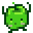

Junimos
| Junimo | |
 | |
| Información
| |
| Cumpleaños | n/d |
| Vive en | Centro Cívico |
| Dirección | Centro Cívico |
| Matrimonio | No |
| Mejores regalos | n/d |
| “ | “Nosotros somos los Junimos... Guardianes del bosque.” |
Los Junimos son espíritus del bosque que vienen de un mundo espiritual, y que han tomado residencia en el abandonado Centro Cívico.
El jugador(a) puede completar los lotes para los Junimos, recolectando y ofreciendo una variedad de objetos encontrados por el valle. Cuando un lote está completo, un Junimo vendrá y lo recogerá, luego lo esconderá en la cabaña que está en la sala principal del Centro Cívico. Completar un lote te recompensará con un objeto, y completando todos los lotes en la placa, se te recompensará con una mejora para el valle, y una estrella para el Centro Cívico. Cuando todos los lotes estén completados, el Centro Cívico estará reparado.
Cuando todos los objetos en una placa estén recolectados, el Junimo comenzará a trabajar en una tarea esa noche, reparando lo que sea que se haya prometido en la parte inferior del lote. No deberías completar un lote en el día que tu esposa de a luz o sea de adopción, ya que esta escena puede prevenir que el evento del Junimo ocurra. Después de completar una placa, el área de alrededor será reparada. Cuando completes una placa, un bebé Junimo te seguirá hasta que abandones el Centro Cívico.
Para la lista completa de recompensas, mira: Lotes.
Si el jugador(a) compra la membresía del MercaJoja, el Centro Cívico se convertirá en un almacén y los Junimos ya no vivirán allí. Si el jugador(a) elige comprar la membresía, ya no podrás completar los lotes.
Hay disponible un Junimo de peluche de tamaño aumentado, el cual sirve para decoración.
En la pantalla de título, haciendo clic en las hojas diez veces, causará que aparezcan tres Junimos y saluden.
Cabaña junimo
Los jugadores(as) pueden comprar una Cabaña junimo en la Torre del Mago, cuando avances en el juego. Una vez posicionada, los Junimos se moverán adentro y vivirán en la granja. Ellos automáticamente cosechan cualquier cultivo cerca a su cabaña y lo ponen adentro, el cual puede ser recolectado por el jugador(a) cuando le plazca.
Galería
| Aldeanos | |
|---|---|
| Solteros | Alex • Elliott • Harvey • Sam • Sebastian • Shane |
| Solteras | Abigail • Emily • Haley • Leah • Maru • Penny |
| Ciudadanos | Caroline • Clint • Demetrius • Evelyn • George • Gil • Gunther • Gus • Jas • Jodi • Kent • Lewis • Linus • Marlon • Marnie • Morris • Pam • Pierre • Robin • Vincent • Willy |
| Otros | Abuelo • Birdie • Enano • Esbirro • Gobernador • Junimos • Krobus • Leo • Matón • Rasmodius • Sandy • Profesor Caracol • Señor Qi • Viejo marinero |